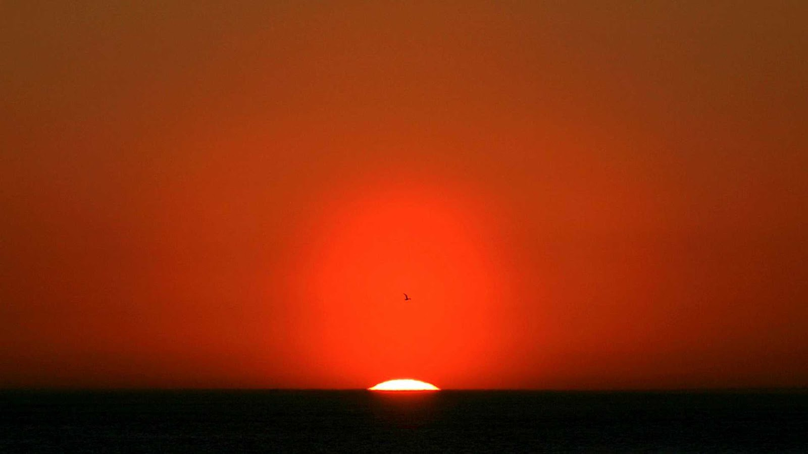
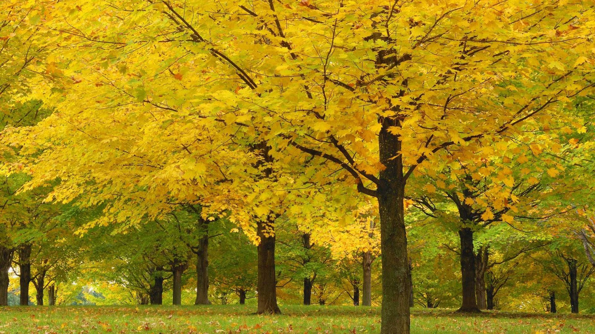

Imagen 1

Imagen 2

Imagen 3
Imagen 4

Imagen 5

Imagen 6

Imagen 7

Imagen 8

La Cumbrecita está a unos 40 kilómetros (25 millas) al oeste de Villa General Belgrano y 118 kilómetros (73 millas) de la ciudad capital de Córdoba
La Cumbrecita está a unos 40 kilómetros (25 millas) al oeste de Villa General Belgrano y 118 kilómetros (73 millas) de la ciudad capital de Córdoba
La Cumbrecita está a unos 40 kilómetros (25 millas) al oeste de Villa General Belgrano y 118 kilómetros (73 millas) de la ciudad capital de Córdoba
La Cumbrecita está a unos 40 kilómetros (25 millas) al oeste de Villa General Belgrano y 118 kilómetros (73 millas) de la ciudad capital de Córdoba